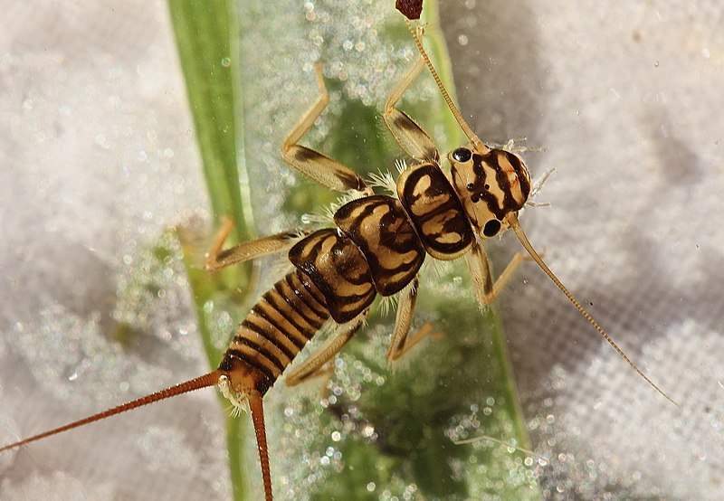
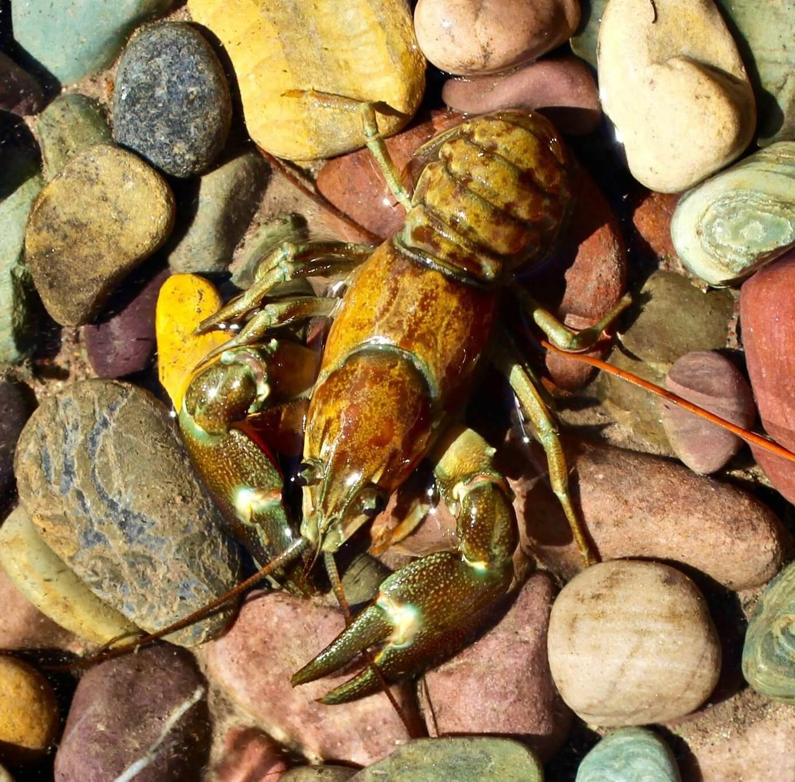
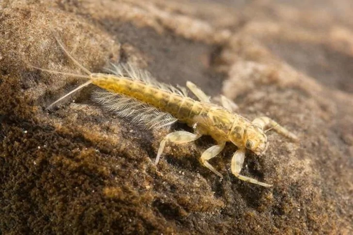
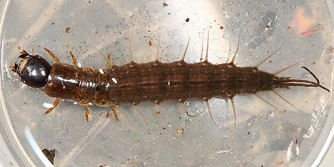
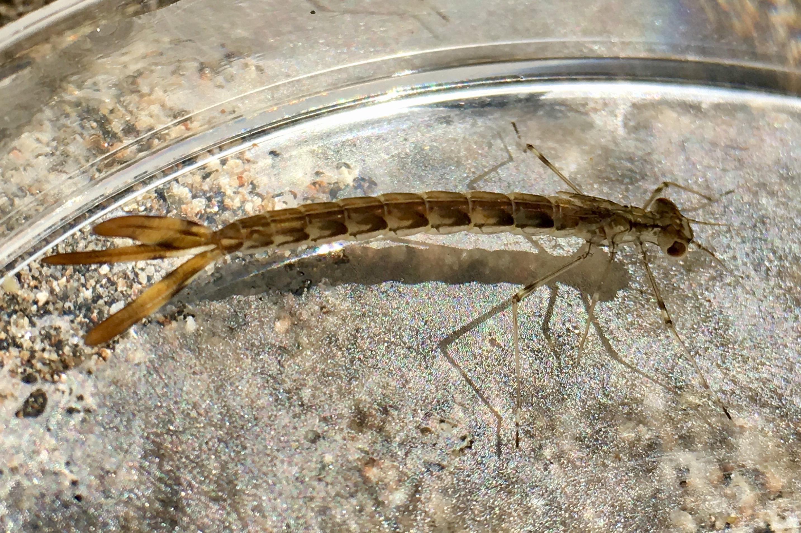
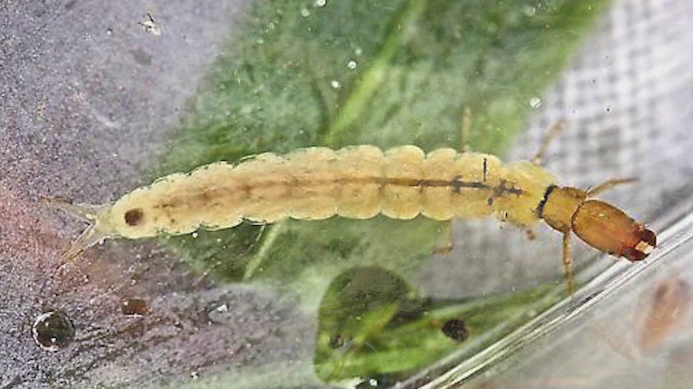
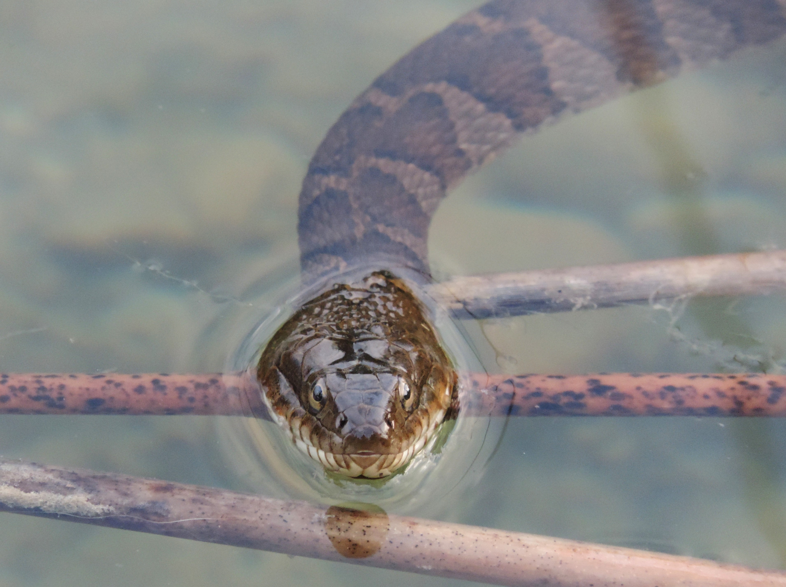

This is a stonefly! we found eight of these.
Stonefly larvae are aquatic, flattened, with 6 sprawling legs and with a segmented abdomen bearing 2 long antenna-like “tails” . The antennae on the head are long, too. Gills are tuftlike and usually positioned at the bases of the legs, on the underside of the body. Each foot has 2 claws.Adults have two pairs of wings that are clear, membranous, and finely veined and rest closely down the back of the body, the forewings covering the hindwings. Antennae are threadlike and long. Colors are usually dull, dark, and drab brown, yellow, or sometimes green.

This is a crawdad! We found two of these one alive one dead
Crayfish also known as crawdads are freshwater crustaceans belonging to the infraorder Astacidea, which also contains lobsters. Taxonomically, they are members of the superfamilies Astacoidea and Parastacoidea. They breathe through feather-like gills.

This is a mayfly! We found four of these
So like the stonefly they have these little tales, one way to tell apart a stonefly from a mayfly is the amount of tails! Mayflies are aquatic insects belonging to the order Ephemeroptera. This order is part of an ancient group of insects termed the Palaeoptera, which also contains dragonflies and damselflies. Over 3,000 species of mayfly are known worldwide, grouped into over 400 genera in 42 families

This is a fishfly! We found five of these
Fishfly larvae have several pairs of fleshy filaments extending from the sides of the abdomen. Unlike hellgrammites, there are no fuzzy gill tufts at their bases. Fishfly larvae are omnivorous or predatory, using their stout mouth pincers for grasping and chewing.
 This is a damselfly! We found three of these
Like the mayfly they have three tails as well however the damselfly have a leaf like tail. Damselfly larvae are narrow-bodied aquatic insects with large eyes, six thin legs, and three paddle-shaped, tail-like gills at the hind end. Damselfly nymphs are common residents of marshes, ponds, lakes, streams, and other aquatic habitats.
 This is a caddisfly! We found twentysix of these!
The caddisflies, or order Trichoptera, are a group of insects with aquatic larvae and terrestrial adults. There are approximately 14,500 described species, most of which can be divided into the suborders Integripalpia and Annulipalpia on the basis of the adult mouthparts

This is a northern water snake! We found two of these!
Northern water snakes can grow up to 5 feet in total length. They can be brown, gray, reddish or brownish-black. They have dark crossbands on their necks and dark blotches on the rest of their bodies. Because of their coloring, these snakes are often mistaken for the venomous cottonmouth.